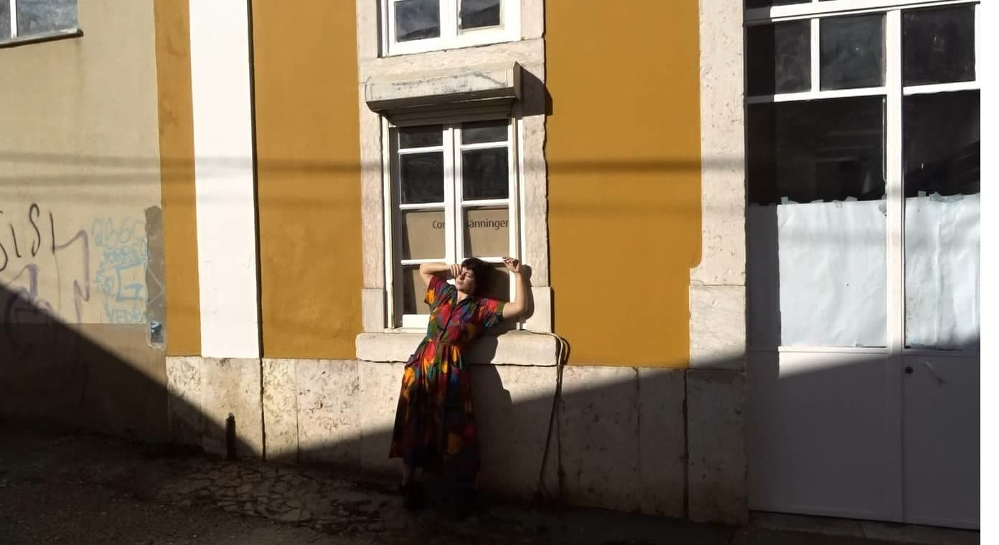
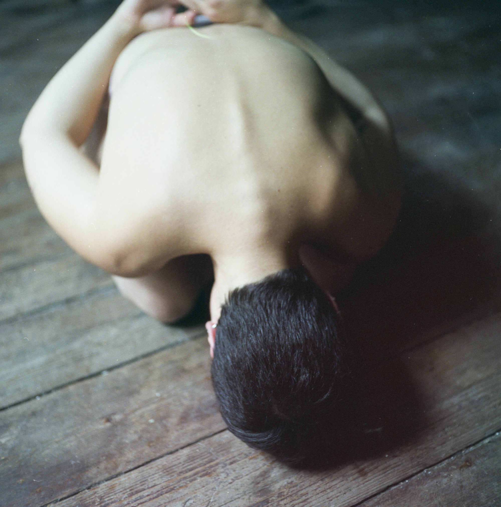

Juliana Fernandes is an artist from Viana do Castelo, with a degree in Dance from Escola Superior de Dança, Lisbon (2017) and a postgraduate degree in Contemporary Dance from Escola Superior de Música e Artes do Espetáculo, Porto (2022).
Between 2018 and 2021, she lived in Torres Vedras, where she completed her professional training as a performer and creator at Performact, and remained the following year as an integral part of the organisation and production of the course, and as a teacher and choreographer.
In 2021, she co-created and directed the Lethes em Bruto Festival, as well as the AN-TRE contemporary dance training programme, which has since been running between Viana do Castelo and Porto.
She co-created, with Victor Gomes, «In the Absence of Tenderness» (which is currently part of the Palcos Instáveis 2ª Casa programme) and 'Blueprint', both co-productions of the Instável Centro Coreográfico and the Teatro Municipal do Porto.
She recently joined Malandra - a collective focused on the development of cultural and artistic programming in Viana do Castelo.
Based in Porto, she has been developing her work as a creator and performer, as well as a teacher of contemporary and creative dance, and improvisation in various institutions and schools.
She is interested in practising empathy, a sense of community and belonging, and in ensuring that the places she inhabits allow her to share fragility, compassion and, especially, a sense of human purpose.
Contacts

